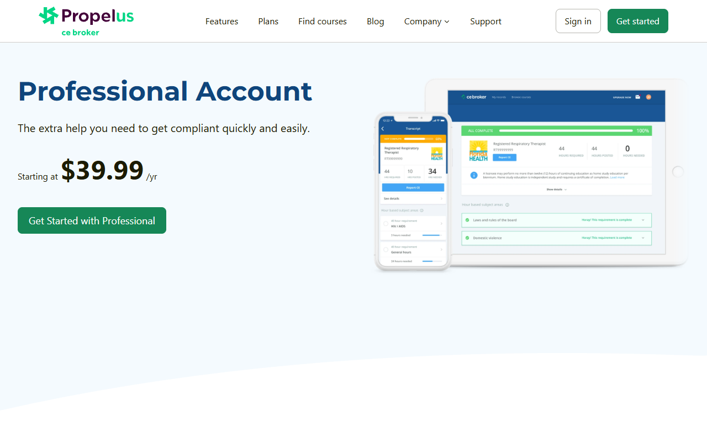
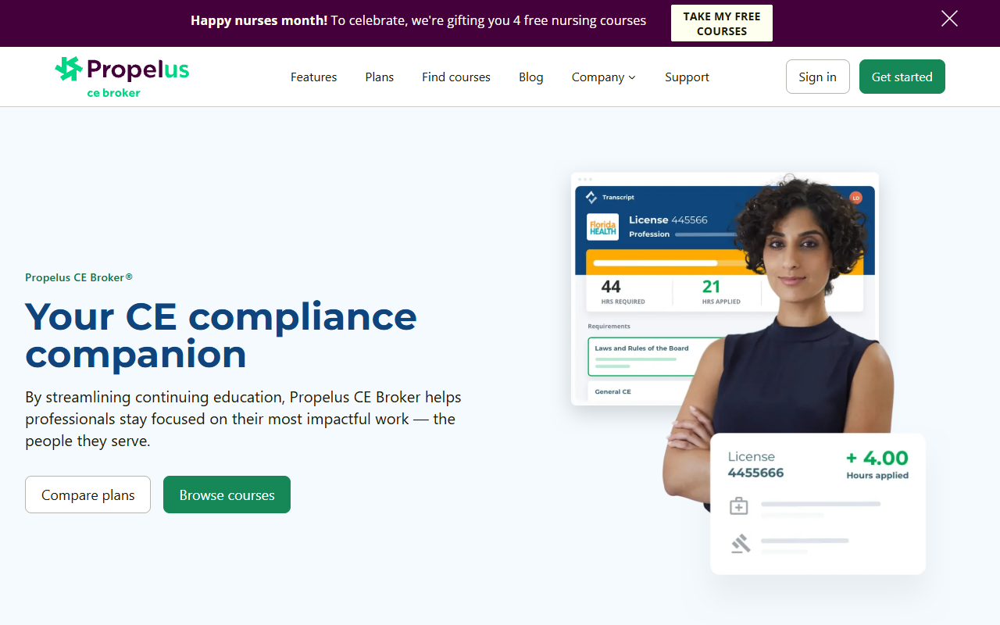

UX Audit · CE Broker Conversion Funnel
A two-phase UX audit of cebroker.com, the leading CE compliance platform serving over 5 million licensed professionals in the US. I reviewed every step of the acquisition and subscription funnel to surface friction, clarify flow, and rebuild trust where it had quietly eroded.


I led the entire UX audit on my own, end to end. Two phases, the full funnel, every page reviewed, every recommendation written and presented to stakeholders.
Propelus is the parent company behind CE Broker, the platform millions of US licensed professionals (nurses, dentists, social workers, architects and more) use to track Continuing Education credits and meet state board requirements. The product had grown organically over years, with a funnel that worked but had quietly accumulated friction. My job was to look at it with fresh, critical eyes and tell them, screen by screen, exactly what was getting in the way of conversion.
CE Broker had strong product market fit but a funnel that was leaking confidence. Hero CTAs competed for attention, terminology shifted between pages, the value of Pro+ wasn't clear, testimonials felt anonymous, and users had no sense of where they were in the journey. The result: hesitation, drop-off, and a subscription page doing less work than it could.
Two audits, one objective: improve flow, clarity and trust. Phase 1 covered the public-facing acquisition funnel (Home, Plans, License, Checkout, PPC landing). Phase 2 went deeper into the frictionless and internal funnels (Courses, Cart, Sign Up, Billing, Payment). Every page was evaluated against the same lens, what's working, what's not, and what to do about it, with concrete recommendations grounded in conversion principles and informed by the brand and audience. The audit became the roadmap for the team's next iteration cycle.
The category leader for Continuing Education compliance, a product millions of professionals depend on to keep their licenses active.
CE Broker is the official CE tracking system in several US states. Nurses, healthcare professionals, architects, and other licensed workers use it to find approved courses, log their credits, and submit to their state boards in time for renewal. For Propelus it's a core revenue line, with multiple subscription tiers (Basic, Professional, Pro+) and a marketplace of board-approved courses.
A platform at that scale and with that level of regulatory weight earns its users' trust by being unmistakably clear. The audit's job was to identify every place where that clarity quietly slipped.
A structured, page-by-page review designed to be actionable, not just descriptive. Every screen reviewed against the same lens, with findings always backed by reasoning the team could pick up and run with.
Mapped the entire user journey across the public site and the internal funnel. Identified the pages with the highest impact on conversion and trust, and made those the priority for the audit.
Reviewed each page through a what's working / what to improve lens, anchored in Nielsen heuristics, conversion best practices, and the specific context of a regulated audience.
Stepped back from individual pages to look at the flow as a whole. Where does the user lose context? Where does terminology shift? Where do CTAs compete instead of guide?
For every issue, a concrete recommendation. Headline rewrites, layout changes, progress indicators, plan comparison patterns, testimonial structure, hierarchy fixes, all written so the team could act without further discovery.
Two phases delivered as in-depth decks, walked through with product, design and stakeholders. The audits became the working roadmap, and the team is currently applying the findings across the funnel.
Across both phases the same patterns kept surfacing. Four themes captured most of the friction users were running into, and most of the upside the product was leaving on the table.
Hero sections offered 2–3 equally weighted CTAs, leaving users to choose without guidance. There was no single, prioritized path through the page, and that choice fatigue compounded across the funnel.
Users had no idea what came after clicking Continue. No progress indicators, no preview of next steps, no sense of how much more was coming. In a funnel where every screen asks for something, that uncertainty is expensive.
Plans, courses and copy were the same for every visitor, regardless of profession or state. For a product whose superpower is knowing your license, that's a missed opportunity to show relevance from the first screen.
Testimonials lacked full names, roles or photos. Disclosure copy was long and blended with marketing text. The product had every reason to feel credible, but the page wasn't doing the credibility work.
From dozens of findings, four recommendations stood out as the highest-impact changes. Each one is actionable on its own, and together they form a clear north star for the next iteration of cebroker.com.
Tailor plans, CTAs and course listings to the user's state and profession from the first click. "Based on your Florida RN license, here's your recommended plan" beats a generic grid every time. Add smart cues like "Most nurses in Florida choose Pro+" to anchor decisions in social proof.
Introduce a progress indicator (Step 2 of 4 · Choose your plan) so users always know where they are. Replace generic section titles with user-centric, benefit-driven copy. Add tooltips and contextual guidance at the moments users are most likely to hesitate.
Testimonials with real names, roles, states and photos (Sarah Lopez, RN, Florida). Benefit-driven quotes like "Since using CE Broker I cut my compliance tracking time in half." Move proof closer to the decision moment instead of burying it below the fold.
Static feature blocks are wasted space when users have questions. Use collapsible or tabbed views in pricing, show contextual benefits before the plan picker, and make plan comparison effortless. Help users self-qualify into the right tier instead of guessing.
Two interactive decks delivered to the Propelus Marketing team, one per phase. Each one walks through every page reviewed with the same lens: what's working, what to improve, and what to do about it. Click into the prototypes below to navigate them.
Two phases, the full funnel, every page reviewed. A few things this project made clearer.
A UX audit isn't a list of issues. It's a prioritized set of bets on where friction is costing the most. Framing every finding as a decision — not a complaint — is what makes an audit actually usable by a product team.
Reviewing pages in isolation misses the real problem. Terminology drifts, CTAs start competing, and trust erodes gradually across screens. The most valuable findings in this audit came from stepping back and reading the funnel as a single piece of writing.
Both audit phases were signed off by the Propelus product and marketing teams. The recommendations became the working roadmap for cebroker.com's next iteration, and the team is actively applying the changes across the funnel.